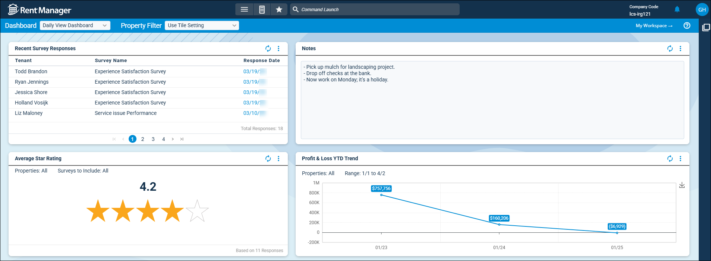

Source: https://rmxhelp.rentmanager.com/MicroContent/Resources/MicroContent/Improve-Search/dashboard.htm
Dashboard
The Dashboard page displays tiles of information related to your Rent Manager database, which can be customized by job role or user. The dashboard is available from the menu, but can also be set as the default page that displays upon logging in within your personal preferences.
Available dashboards are listed in the Dashboard field at the top of the page. Dashboards can be created and edited using the dashboard designer.

Dashboard Filters
The following options allow to you change which dashboard displays, and if the information shown on the dashboard is restricted to a selected property or property group.
More Information
Only properties to which you have access display. Your access to properties can be managed from your user account or on the property's details page. For more information, refer to Limit Access to a Property.
Dashboard Display Filter
The Dashboard drop-down field displays all available dashboards for the current user. If the current user does not have multiple dashboards assigned, the drop-down does not display.
Dashboard Property Filter
If the option Show Dashboard Property Filter was selected in the dashboard designer, the dashboard tiles can be updated as a batch to display only the properties or property groups you wish to see. The following options are available to select in the Property Filter field.
| Option | Description |
|---|---|
|
Use Tile Setting |
If selected, only results for properties selected of the dashboard tiles displays. These settings are established in Rent Manager 12 |
|
<All Properties> |
If selected, data for all properties display in the results of the dashboard tile. Alternatively, select multiple individual properties for specific results. |
|
Group |
If selected, data for all properties in the selected group display in the results of the dashboard tile. |